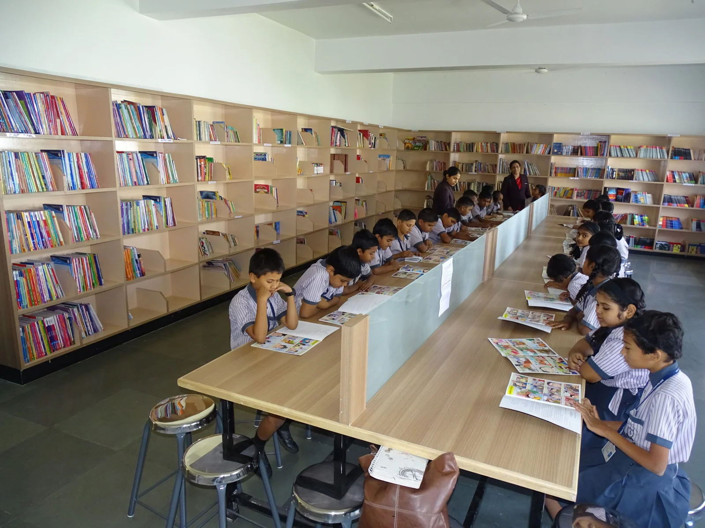

Features
|
Computer Lab
The aim of computer education in the school is to get the child acquainted with the latest information in computer technology and to assist in removing his/her wariness of the machine and making the children user- friendly with the computer.
The school has a hi-tech state of the art computer laboratory having provision of every two students. These computers are used for the management system. |
Laboratories
Daffodils have modern well-equipped science laboratories. The labs have the requisite essential equipment for conducting practical for the integrated science course at the secondary and senior secondary school, stage as per the requirement of the new curriculum and scheme of studies laid down by the CBSE.
The students themselves have preserved a large variety of Biology specimens in the laboratories |
 |
|
Classes
Daffodils have modern well-equipped science laboratories. The labs have the requisite essential equipment for conducting practical for the integrated science course at the secondary and senior secondary school, stage as per the requirement of the new curriculum and scheme of studies laid down by the CBSE.
The students themselves have preserved a large variety of Biology specimens in the laboratories |
Library
Daffodils have modern well-equipped science laboratories. The labs have the requisite essential equipment for conducting practical for the integrated science course at the secondary and senior secondary school, stage as per the requirement of the new curriculum and scheme of studies laid down by the CBSE.
The students themselves have preserved a large variety of Biology specimens in the laboratories |  |